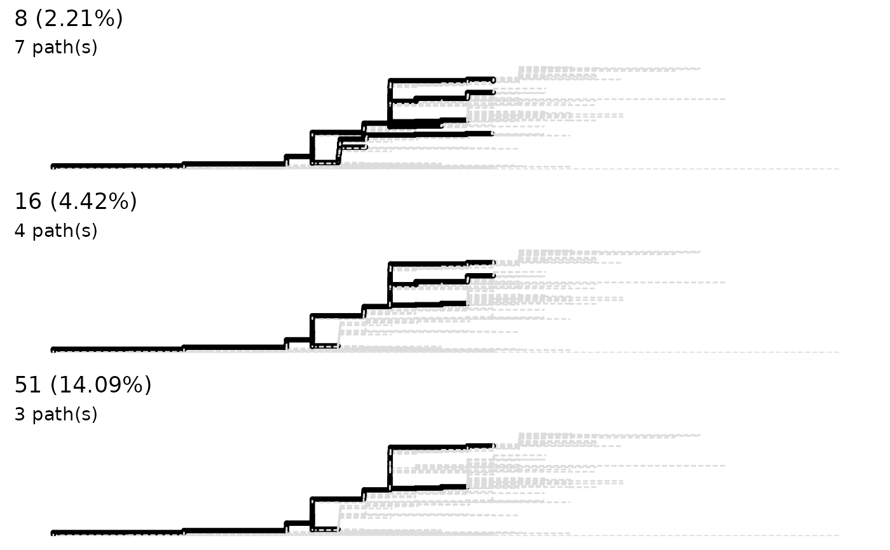
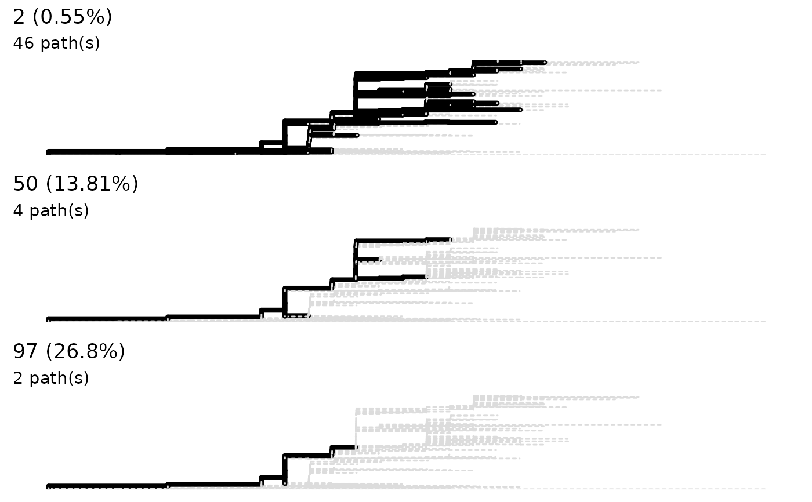

lineagePath finds the lineages of a phylogenetic tree
providing the corresponding sequence alignment. This is done by finding
'major SNPs' which usually accumulate along the evolutionary pathways.
sneakPeek is intended to plot 'similarity' (actually the
least percentage of 'major SNP') as a threshold against number of output
lineagePath. This plot is intended to give user a rough view about how many
lineages they could expect from the 'similarity' threshold in the function
lineagePath. The number of lineagePath is preferably not be
too many or too few. The result excludes where the number of lineagePath is
greater than number of tips divided by 20 or user-defined maxPath. The zero
lineagePath result will also be excluded.
When used on the return of sneakPeek, a
lineagePath with the closest similarity will be retrieved
from the returned value.
lineagePath(tree, similarity, ...) # S3 method for phyMSAmatched lineagePath( tree, similarity = NULL, simMatrix = NULL, forbidTrivial = TRUE, ... ) sneakPeek(tree, step = 9, maxPath = NULL, minPath = 0, makePlot = TRUE) # S3 method for sneakPeekedPaths lineagePath(tree, similarity, ...)
| tree | The return from |
|---|---|
| similarity | This decides how minor SNPs are to remove. If provided as
fraction between 0 and 1, then the minimum number of SNP will be total tips
times |
| ... | Other arguments. |
| simMatrix | Deprecated and will not have effect. |
| forbidTrivial | Does not allow trivial trimming. |
| step | the 'similarity' window for calculating and plotting. To better see the impact of threshold on path number. The default is 10. |
| maxPath | maximum number of path to return show in the plot. The number of path in the raw tree can be far greater than trimmed tree. To better see the impact of threshold on path number. This is preferably specified. The default is one 20th of tree tip number. |
| minPath | minimum number of path to return show in the plot. To better see the impact of threshold on path number. The default is 1. |
| makePlot | Whether make a plot when return. |
Lineage path represent by node number.
sneakPeek return the similarity threhold against number of
lineagePath. There will be a simple dot plot between threshold and path
number if makePlot is TRUE.
data('zikv_tree') data('zikv_align') tree <- addMSA(zikv_tree, alignment = zikv_align) lineagePath(tree)#> This is a 'lineagePath' object. #> #> 4 lineage paths using 4.41989% as "major SNP" thresholdsneakPeek(tree, step = 3)#> similarity pathNum #> 1 0.005524862 46 #> 2 0.008287293 26 #> 3 0.011049724 15 #> 4 0.013812155 11 #> 5 0.016574586 9 #> 6 0.019337017 8 #> 7 0.022099448 7 #> 8 0.024861878 7 #> 9 0.027624309 6 #> 10 0.030386740 5 #> 11 0.033149171 5 #> 12 0.035911602 5 #> 13 0.038674033 5 #> 14 0.041436464 5 #> 15 0.044198895 4 #> 16 0.046961326 4 #> 17 0.049723757 4 #> 18 0.052486188 4 #> 19 0.055248619 4 #> 20 0.058011050 4 #> 21 0.060773481 4 #> 22 0.063535912 4 #> 23 0.066298343 4 #> 24 0.069060773 4 #> 25 0.071823204 4 #> 26 0.074585635 4 #> 27 0.077348066 4 #> 28 0.080110497 4 #> 29 0.082872928 4 #> 30 0.085635359 4 #> 31 0.088397790 4 #> 32 0.091160221 4 #> 33 0.093922652 4 #> 34 0.096685083 4 #> 35 0.099447514 4 #> 36 0.102209945 4 #> 37 0.104972376 4 #> 38 0.107734807 4 #> 39 0.110497238 4 #> 40 0.113259669 4 #> 41 0.116022099 4 #> 42 0.118784530 4 #> 43 0.121546961 4 #> 44 0.124309392 4 #> 45 0.127071823 4 #> 46 0.129834254 4 #> 47 0.132596685 4 #> 48 0.135359116 4 #> 49 0.138121547 4 #> 50 0.140883978 3 #> 51 0.143646409 3 #> 52 0.146408840 3 #> 53 0.149171271 3 #> 54 0.151933702 3 #> 55 0.154696133 3 #> 56 0.157458564 3 #> 57 0.160220994 2 #> 58 0.162983425 2 #> 59 0.165745856 2 #> 60 0.168508287 2 #> 61 0.171270718 2 #> 62 0.174033149 2 #> 63 0.176795580 2 #> 64 0.179558011 2 #> 65 0.182320442 2 #> 66 0.185082873 2 #> 67 0.187845304 2 #> 68 0.190607735 2 #> 69 0.193370166 2 #> 70 0.196132597 2 #> 71 0.198895028 2 #> 72 0.201657459 2 #> 73 0.204419890 2 #> 74 0.207182320 2 #> 75 0.209944751 2 #> 76 0.212707182 2 #> 77 0.215469613 2 #> 78 0.218232044 2 #> 79 0.220994475 2 #> 80 0.223756906 2 #> 81 0.226519337 2 #> 82 0.229281768 2 #> 83 0.232044199 2 #> 84 0.234806630 2 #> 85 0.237569061 2 #> 86 0.240331492 2 #> 87 0.243093923 2 #> 88 0.245856354 2 #> 89 0.248618785 2 #> 90 0.251381215 2 #> 91 0.254143646 2 #> 92 0.256906077 2 #> 93 0.259668508 2 #> 94 0.262430939 2 #> 95 0.265193370 2 #> 96 0.267955801 2 #> 97 0.270718232 1 #> 98 0.273480663 1 #> 99 0.276243094 1 #> 100 0.279005525 1 #> 101 0.281767956 1 #> 102 0.284530387 1 #> 103 0.287292818 1 #> 104 0.290055249 1 #> 105 0.292817680 1 #> 106 0.295580110 1 #> 107 0.298342541 1 #> 108 0.301104972 1 #> 109 0.303867403 1 #> 110 0.306629834 1 #> 111 0.309392265 1 #> 112 0.312154696 1 #> 113 0.314917127 1 #> 114 0.317679558 1 #> 115 0.320441989 1 #> 116 0.323204420 1 #> 117 0.325966851 1 #> 118 0.328729282 1 #> 119 0.331491713 1 #> 120 0.334254144 1 #> 121 0.337016575 1 #> 122 0.339779006 1 #> 123 0.342541436 1 #> 124 0.345303867 1 #> 125 0.348066298 1 #> 126 0.350828729 1 #> 127 0.353591160 1 #> 128 0.356353591 1 #> 129 0.359116022 1 #> 130 0.361878453 1 #> 131 0.364640884 1 #> 132 0.367403315 1 #> 133 0.370165746 1 #> 134 0.372928177 1 #> 135 0.375690608 1 #> 136 0.378453039 1 #> 137 0.381215470 1 #> 138 0.383977901 1 #> 139 0.386740331 1 #> 140 0.389502762 1 #> 141 0.392265193 1 #> 142 0.395027624 1 #> 143 0.397790055 1 #> 144 0.400552486 1 #> 145 0.403314917 1 #> 146 0.406077348 1 #> 147 0.408839779 1 #> 148 0.411602210 1 #> 149 0.414364641 1 #> 150 0.417127072 1 #> 151 0.419889503 1 #> 152 0.422651934 1 #> 153 0.425414365 1 #> 154 0.428176796 1 #> 155 0.430939227 1 #> 156 0.433701657 1 #> 157 0.436464088 1 #> 158 0.439226519 1 #> 159 0.441988950 1 #> 160 0.444751381 1 #> 161 0.447513812 1 #> 162 0.450276243 1 #> 163 0.453038674 1 #> 164 0.455801105 1 #> 165 0.458563536 1 #> 166 0.461325967 1 #> 167 0.464088398 1 #> 168 0.466850829 1 #> 169 0.469613260 1 #> 170 0.472375691 1 #> 171 0.475138122 1 #> 172 0.477900552 1 #> 173 0.480662983 1 #> 174 0.483425414 1 #> 175 0.486187845 1 #> 176 0.488950276 1 #> 177 0.491712707 1 #> 178 0.494475138 1 #> 179 0.497237569 1 #> 180 0.500000000 1x <- sneakPeek(tree, step = 3)lineagePath(x, similarity = 0.05)#> This is a 'lineagePath' object. #> #> 4 lineage paths using 5% as "major SNP" threshold